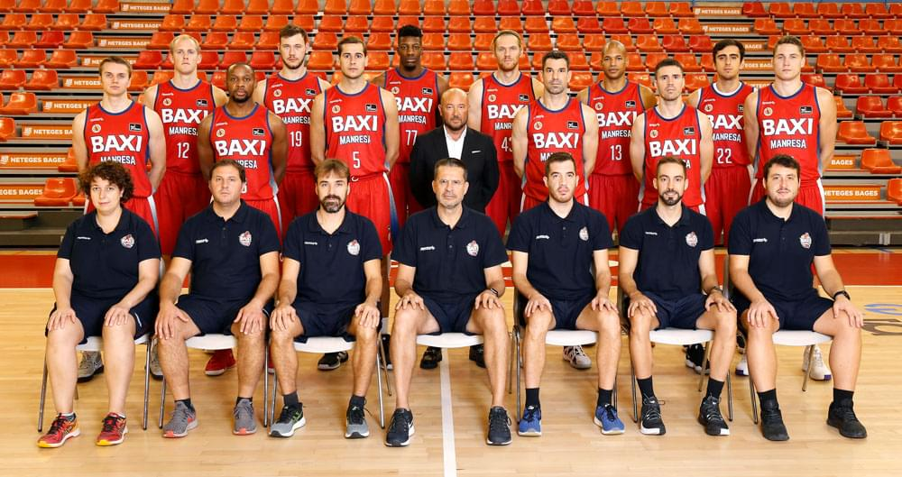
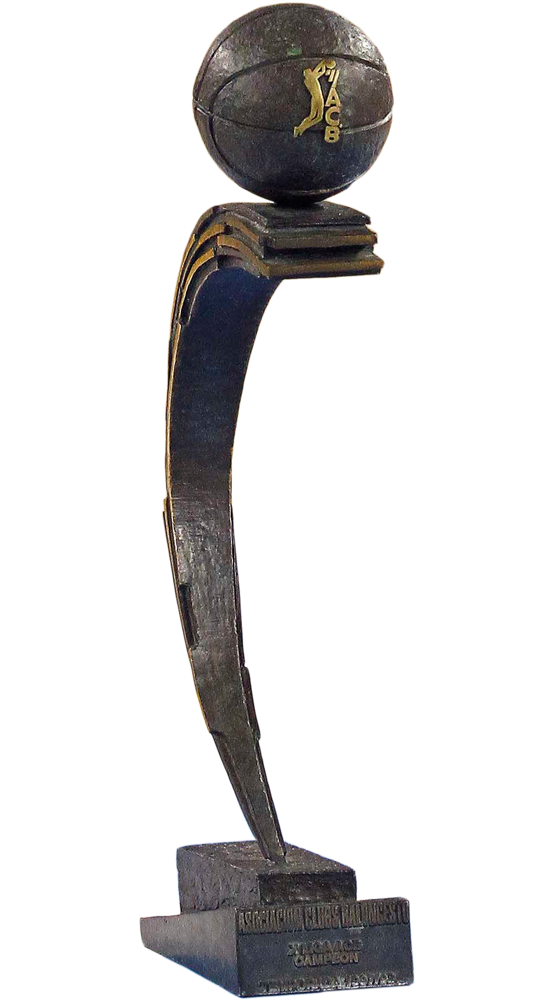
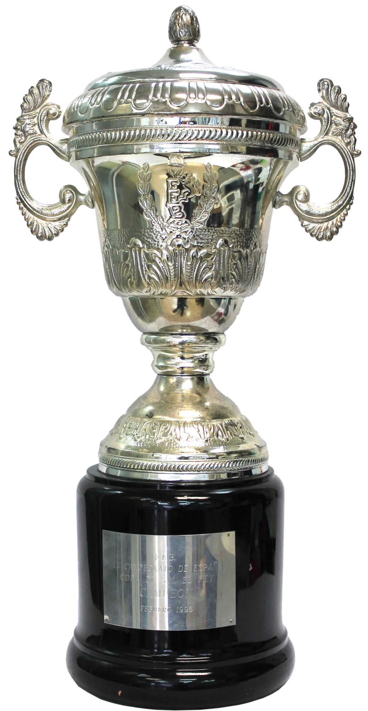

Equip Lliga Endesa
Una història d'esforç, passió i èpica. Una llegenda del bàsquet estatal.
Plantilla BAXI Manresa 2020 - 2021
veure la plantilla
Palmarès
El Bàsquet Manresa va viure la seva època daurada durant la dècada dels '90. L'any 1996 s'aconseguia, contra tot pronòstic, guanyar la Copa del Rei, a Múrcia. Dos anys més tard, l'aleshores TDK Manresa materialitzava una de les gestes esportives més recordades de tots els temps, guanyant la Lliga ACB després de derrotar Estudiantes, Real Madrid i TAU de Vitòria. A banda d'aquests grans títols, el Bàsquet Manresa ha guanyat també la Lliga Catalana en dues ocasions (1997 i 1999), i ha aconseguit l'ascens guanyant la LEB el 2007, i guanyant el play-off d'ascens el 2018.

Jugadors emblemàtics
- Joan Creus
- Roger Grimau
- Serge Ibaka
- Rafa Martínez
- Albert Oliver
- Pep Pujolràs
- Juan Domingo de la Cruz
- Adam Hanga
- Juan Alberto Espil
- Andrés Nocioni
- Rolando Frazer
- George Gervin
- Granger Hall
- Nate Higgs
- Jeff Lamp
- Linton Townes
- Justin Doellman
- Derrick Alston